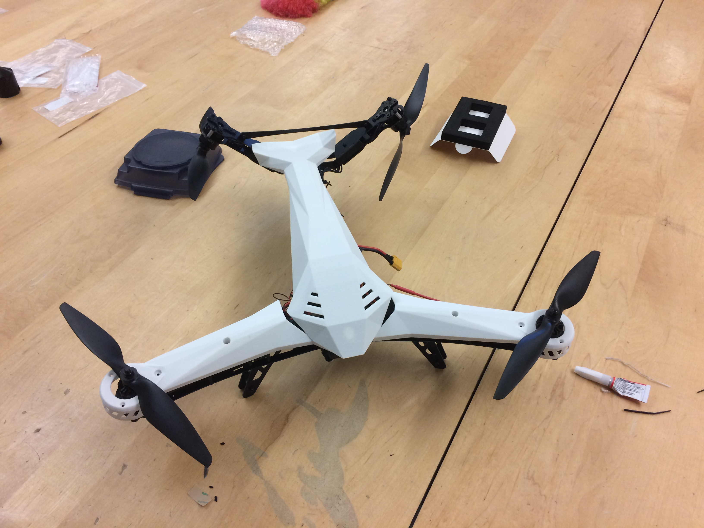

Somto Ejinkonye's Portfolio
This is my portfolio.
Hello, I am Somto Ejinkonye and I am a Junior studying Computer Engineering and NYU. I am passonate about cybersecurity, prototyping and embedded systems.
Click here to get a random fact about computer science!
About Me:
I am an avid hardware enthusiast and problemsolver. Here are some of my projects and interests.
Projects
During my senior year of highschool my robotics team built a quadcopter and attempted to program it autonomously navigate an obstical field.
Hobbies/Jobs

I am Data Structures and Algorithms Teaching assistant and a cybersecurity Intern. I enjoys teaching others about data structures and problem solving and learning about ways to keep myself secure. In my freetime I enjoy reading about adavancements in technology, storytelling, reading comics and exploring the city.
I enjoy exploring different music genres and would love any suggestions/reccomendations.
Sources and Citations:
- https://www.mediapost.com/publications/article/291358/90-of-todays-data-created-in-two-years.html
- https://www.realclearscience.com/articles/2019/07/02/your_mobile_phone_vs_apollo_11s_guidance_computer_111026.html
- https://fossbytes.com/from-where-did-microsoft-windows-got-its-name-windows/